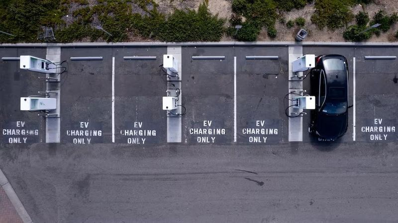

⚡California hỗ trợ 270 triệu USD cho xe điện , giảm ngay 3.500 USD cho người mua lần đầu
California tung gói hỗ trợ 270 triệu USD, giảm ngay 3.500 USD mua xe điện lần đầu để thúc đẩy thị trường Minh Ngọc | 18/07/2026 08:52 AM | Công nghệ Theo dõi Cafebiz.vn trên California chuẩn bị triển khai chương trình ho